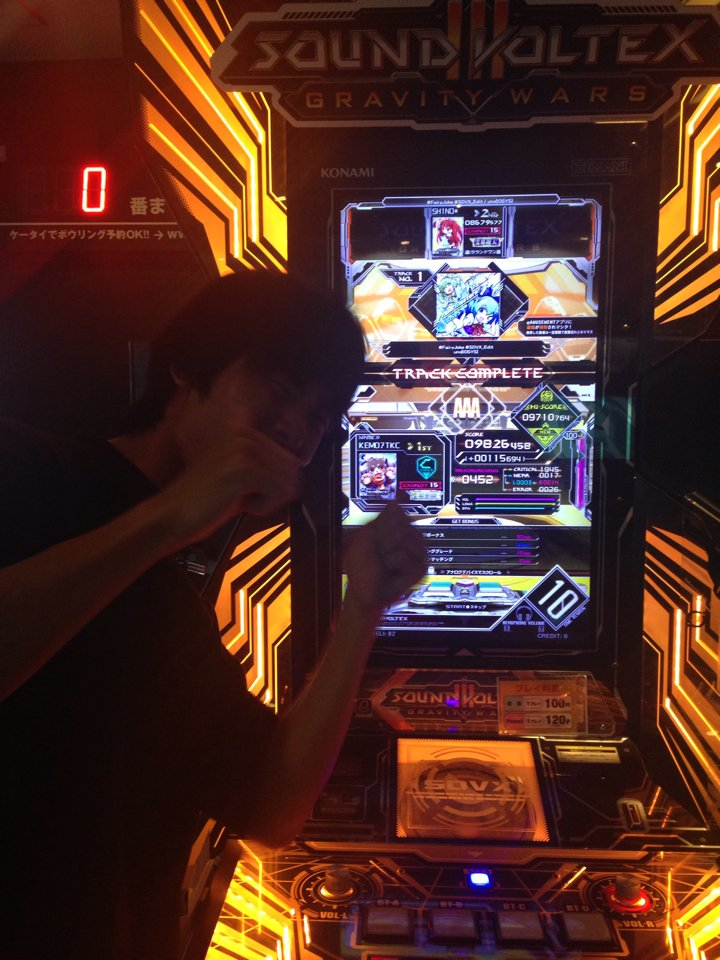

メンバー紹介
2016年度は総員8人でした。

池野竜將 (いけの りゅうすけ)
- 統括・プログラム班・広報班
- 趣味:ダーツ
- 一言:ダーツして♡

源 啓多 (みなもと けいた)
- プログラム班・広報班
- 趣味:Magic The Gathering
- 一言:素因数分解の悦びを知りやがって、お前許さんぞ > R. Propper

山下 哲平 (やました てっぺい)
- 理論班・広報班
- 趣味:ビリヤード
- 一言:眠い

伊藤 有輝 (いとう ゆうき)
- 理論班・広報班
- 趣味:ラーメン
- 一言:山岡家おいしい
- 
駒ヶ嶺 壮 (こまがみね そう)
- 理論班・広報班
- 趣味:ネットサーフィン
- 一言:自分のやれる範囲のことを頑張りました。

橋本 和典 (はしもと かずのり)
- 理論班
- 趣味:スポーツ観戦
- 一言:日本シリーズ観に行きたかった(´；ω；｀)

亀谷 浩也 (かめたに ひろや)
- 理論班
- 趣味:カレー屋巡り
- 一言:カレーには幸せホルモンが(ry

千葉 大樹 (ちば だいじゅ)
- 理論班
- 趣味:音ゲー
- 一言:チュウニマルチプレイ募集中。初心者歓迎